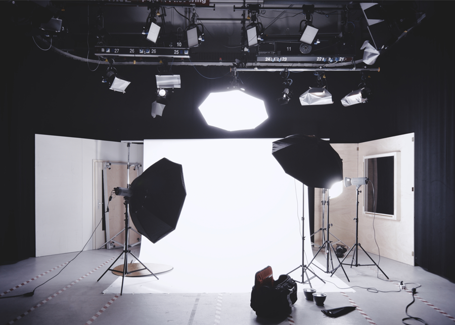

FLOW GRAPHICS is een grafisch design agency. Ons bedrijf wordt voornamelijk in 3 grote taken onderverdeeld: 1. Branding 2. Webdesign en 3. Fotografie. Dat doen we door goed naar de opdrachtgever te luisteren en door ons strategisch & creatief volledig in te zetten. We houden van ons vak en het boeken van resultaat voor de klant.
Branding

Hebt u een logo nodig? Of misschien wel een website of een folder? Bij FlOW kunnen we dit allemaal doen voor u. Dit is tevens onze grootste tak in het bedrijf en daar zijn we fier op. FLOW heeft al enkele prijzen op zijn naam staan voor inovatief en baanbrekende designs.
Webdesign
Wij zijn constant op zoek naar nieuwe technologie en hoe we u kunnen helpen met het wereldwijd bekend maken van uw merk. Samen u criëeren we een website op maat gemaakt voor uw bedrijf, klaar om de wereld te veroveren.
Fotografie
Onze fotograaf Charlotte is verantwoordelijk voor de fotografie afdeling. U kunt Flow Graphics aanspreken voor zowel grote als kleine photoshoots. Wij zijn vooral gespecialiseerd in product photography. Alle foto's die we gebruiken in projecten maken we zelf.